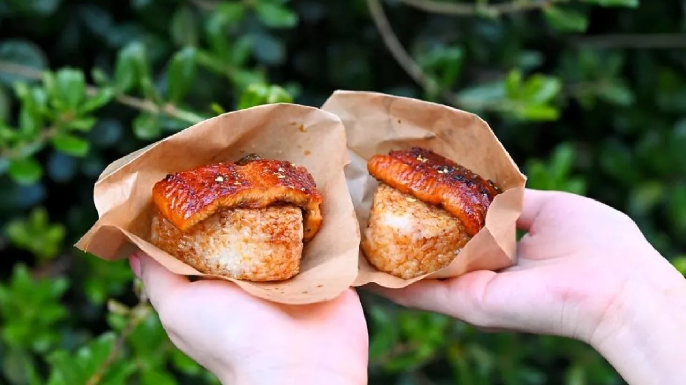
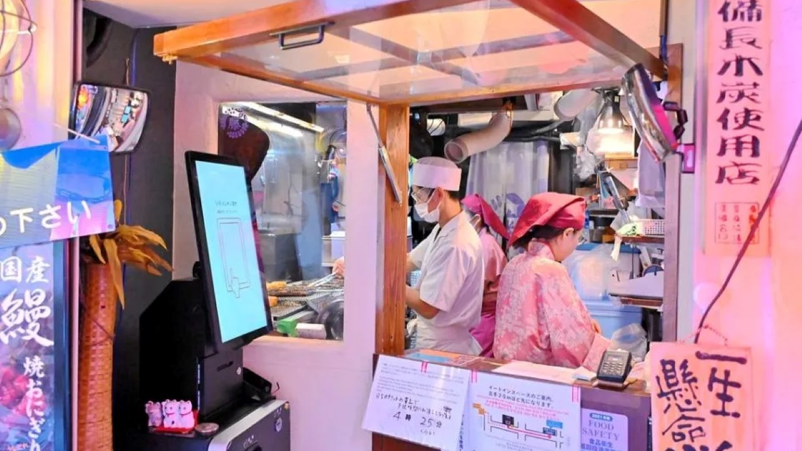
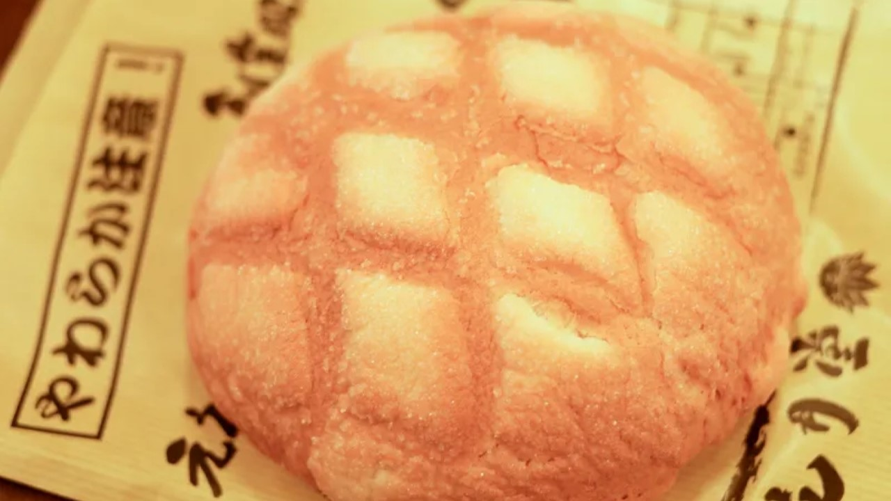
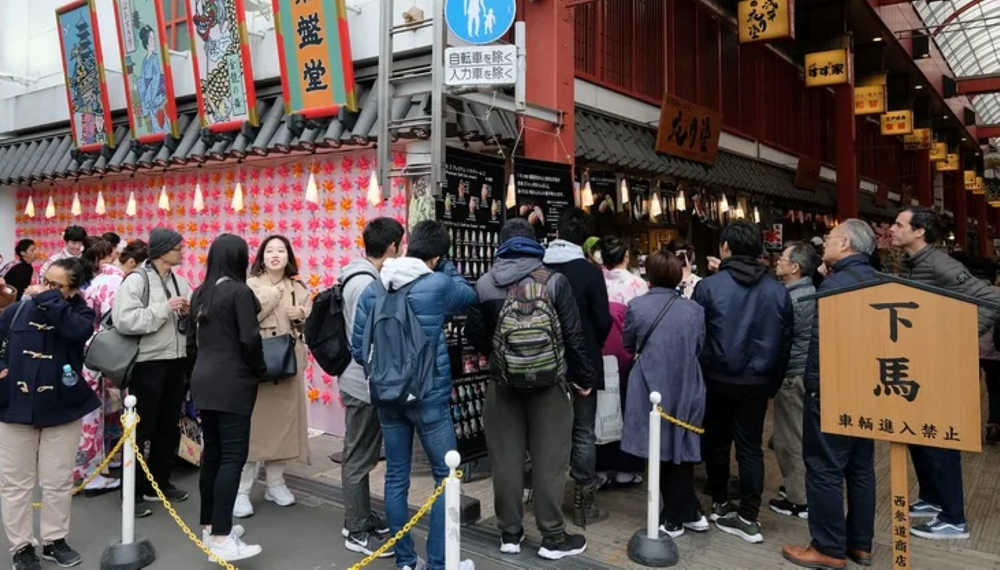
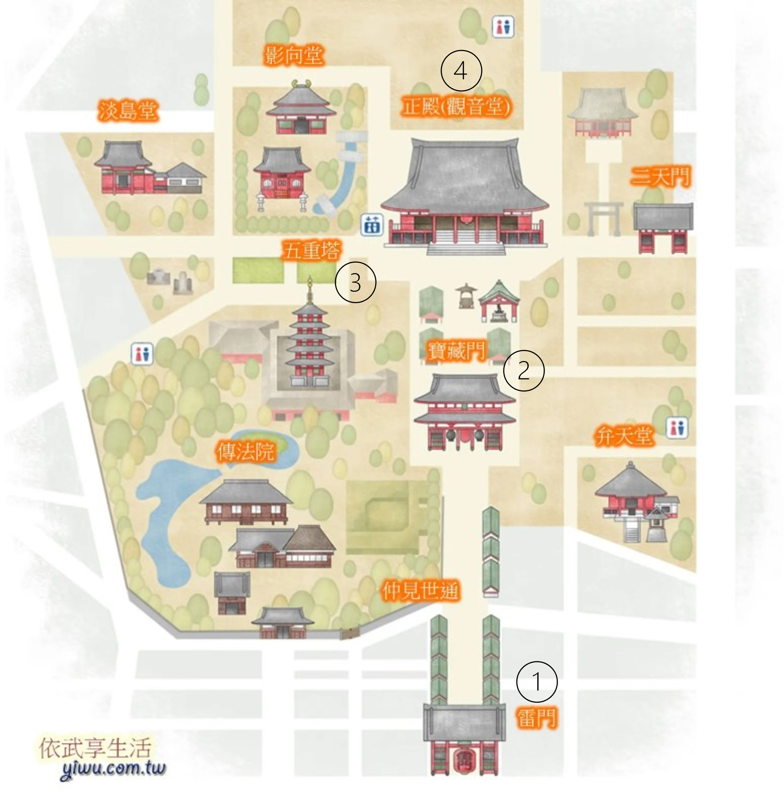
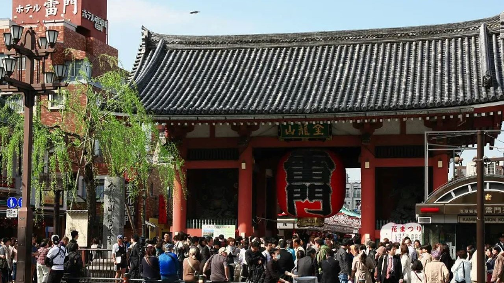
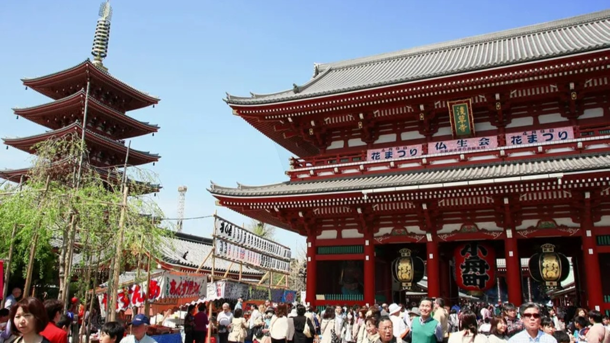
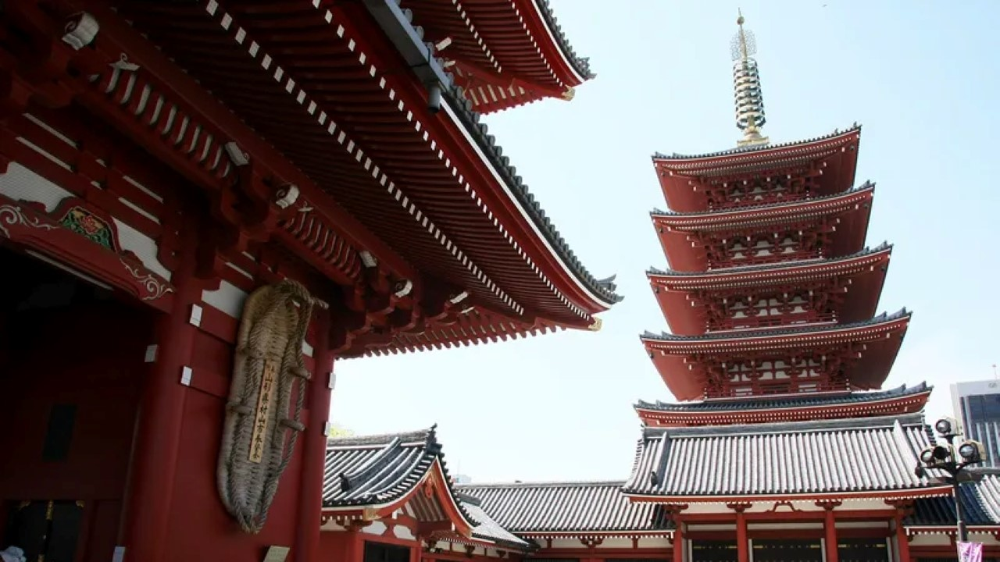

景點介紹
1. 浅草うなな(鰻魚飯糰)
浅草うなな是在東京淺草寺深受觀光客喜愛的炭烤鰻魚飯糰，就算在這週邊有滿滿各種美食伴手禮，很多人還是會專程來排隊。
飯糰剛烤出來非常香，一個600日圓而已，蒲燒鰻魚鮮美可口，鰻魚軟嫩很香很好吃，且不會太鹹口味適中，飯糰表皮也烤得微焦口感很好，喜歡吃鰻魚的旅人可千萬別錯過！


浅草うなな是在東京淺草寺深受觀光客喜愛的炭烤鰻魚飯糰，就算在這週邊有滿滿各種美食伴手禮，很多人還是會專程來排隊。飯糰剛烤出來非常香，一個600日圓而已，蒲燒鰻魚鮮美可口，鰻魚軟嫩很香很好吃，且不會太鹹口味適中，飯糰表皮也烤得微焦口感很好，喜歡吃鰻魚的旅人可千萬別錯過！
2. 淺草花月堂
花月堂是淺草非常有名氣的店，它始於1945年，很多明星都有光顧過，人氣超級旺，隊是一定要排的，但是不會排很久，去化速度算快。
花月堂最有名氣的是超大的菠蘿包，據說每天可以賣出3000多個，基本上晚去就買不到了，所以想要品嚐的朋友一定要早點去。


9. 淺草寺
淺草（Asakusa）是位於日本東京都台東區的一個地名，也是以淺草寺為中心的周邊繁華街區的總稱，坐擁「雷門」與「仲見世通」等著名景點。
淺草寺是日本最具代表性的著名旅遊景點之一，每年參拜人數都超過3000萬人。作為東京最古老的寺廟，每年舉辦的「初詣」、「節分」等各種代表日本傳統的文化活動更是吸引著大批來自海內外的遊客。

① 雷門
從地鐵站出來後沒多久，率先看到的是日本東京最強地標之一，巨大雷門燈籠，通往東京都最古老寺院的入口，想在這裡拍張照可不容易，因為人山人海超級兇猛。
雷門創建於西元942年，1865年不幸遭到大火焚毀，從此消失在世人眼中長達95個年頭。
1960年在松下電器 (Panasonic) 贊助下重獲新生，目前在燈籠下方還可看到贊助者的蹤跡呢。整個燈籠高3.9公尺、寬3.3公尺，重達700公斤非常震撼，燈籠底部有龍形雕刻也是必看重點喔！

② 寶藏門
接著走過長250公尺仲見世商店街，會抵達淺草寺裡的下個景點「寶藏門」。
同雷門一樣，門上也懸掛著巨大的燈籠，燈籠上寫著「小船町」的字樣。門內左右各立著一尊「仁王神」像。神像瞋目切齒的表情令人印象深刻，左側張著嘴的一尊是「阿形」，右側嘴巴緊閉的一尊是「吽形」。
寶藏門最大的看點是供奉在門扇背面上的一雙大草鞋。巨大的草鞋是獻給仁王的貢品，據說也能驅魔辟邪。

③ 五重塔
一旁五重塔是另個難以忽略的景點，同為武將平公雅所建，1911年指定為國寶，1945年因二次世界大戰而炸毀。
今日嶄新的面容，是1973年重建後的模樣。據說塔最上層還收有舍利子呢，記得與旁邊的大草鞋合照入鏡吧～

④ 本堂